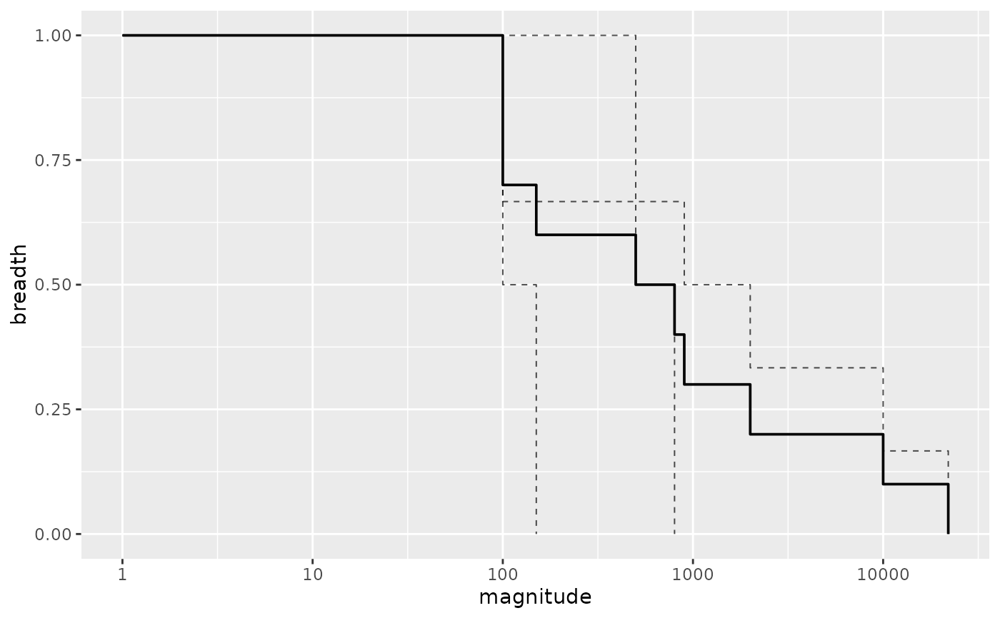
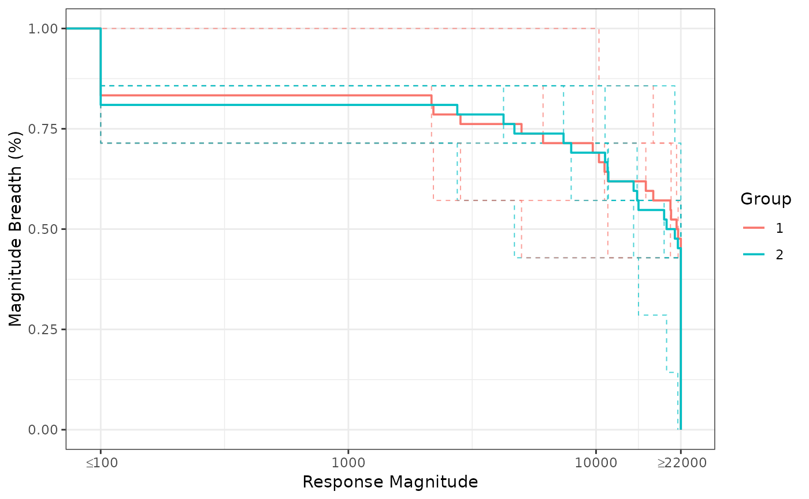
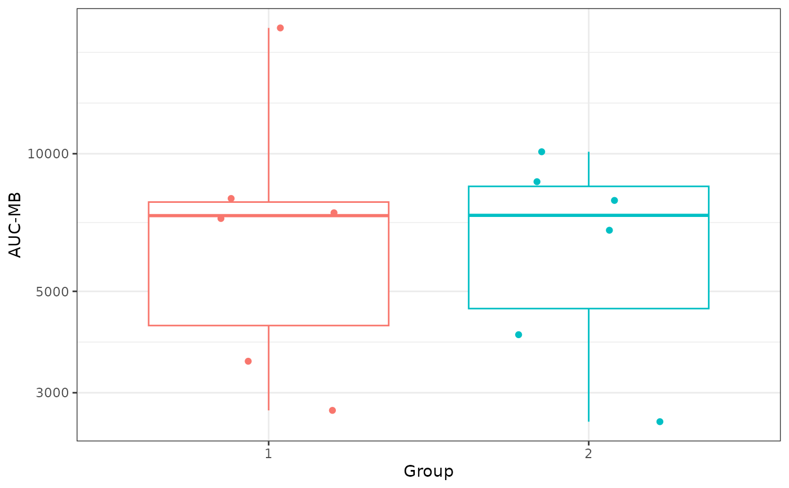

Create a data.frame to plot MB curves and AUC
mb_results.RdCreates step curve info for magnitude breadth (MB) plots, with option to include response status and have logged transformation for AUC calculation.
Usage
mb_results(
magnitude,
response = NULL,
lower_trunc = 100,
upper_trunc = 22000,
x_transform = c("log10", "raw")
)Arguments
- magnitude
values to create step curve and AUC for (numeric vector)
- response
response status, vector of type integer (0/1) or logical (TRUE/FALSE). If NULL assumes no response information considered.
- lower_trunc
the lower truncation value (numeric scalar that must be 0 or higher).
- upper_trunc
the upper truncation value (numeric scalar that must be higher than
lower_trunc). Set to Inf for no upper truncation- x_transform
a character vector specifying the transformation for AUC calculation, if any. Must be one of "log10" (default) or "raw".
Value
Returns a data frame with the following columns: * magnitude -
magnitude values (similar to times in a survival analysis) * breadth -
percent of antigens greater or equal to the magnitude value *
n_remaining - number of antigens remaining greater or equal to the
magnitude value * n_here - number of antigens at the exact magnitude
value * aucMB - area under the magnitude breadth curve
Details
AUC is calculated from 0 (or 1 if x_transform = "log10") to the x values
(after lower_trunc/upper_trunc x value truncation).
If response is given, non-responding values (response = 0 or FALSE) will
have their values set to the lower_trunc for MB curves and AUC
calculations.
The output can be used for plotting step function curves, with magnitude on
the x axis and breadth on the y axis. Note if x_transform = 'log10' the
resulting plot is best displayed on the log10 scale
(ggplot2::scale_x_log10).
aucMB can be used for boxplots and group comparisons. Note aucMB is
repeated for values of magnitude and breadth.
Examples
mb_results(magnitude = 96:105, response = c(rep(0,5), rep(1,5)),
lower_trunc = 100, x_transform = 'log10')
#> magnitude breadth n_remaining n_here aucMB
#> 1 1 1.0 10 NA 101.4841
#> 2 100 0.5 10 5 101.4841
#> 3 101 0.4 5 1 101.4841
#> 4 102 0.3 4 1 101.4841
#> 5 103 0.2 3 1 101.4841
#> 6 104 0.1 2 1 101.4841
#> 7 105 0.0 1 1 101.4841
mb_results(magnitude = 96:105, response = c(rep(0,5), rep(1,5)),
lower_trunc = 100, x_transform = 'raw')
#> magnitude breadth n_remaining n_here aucMB
#> 1 0 1.0 10 NA 101.5
#> 2 100 0.5 10 5 101.5
#> 3 101 0.4 5 1 101.5
#> 4 102 0.3 4 1 101.5
#> 5 103 0.2 3 1 101.5
#> 6 104 0.1 2 1 101.5
#> 7 105 0.0 1 1 101.5
# Simple Example
library(dplyr)
dat = data.frame(magnitude = c(500,800,20,150,30000,10,1,2000,10000,900),
response = c(1,1,0,1,1,0,0,1,1,1),
ptid = c(1,1,2,2,3,3,3,3,3,3))
ind_results <-
dat |>
dplyr::group_by(ptid) |>
dplyr::group_modify(~ mb_results(magnitude = .x$magnitude, response = .x$response))
overall_results <-
mb_results(magnitude = dat$magnitude, response = dat$response)
ggplot2::ggplot(data = overall_results, ggplot2::aes(x = magnitude, y = breadth)) +
ggplot2::geom_step(data = ind_results, ggplot2::aes(group = ptid),
linetype = "dashed", direction = 'hv', lwd = .35, alpha = .7) +
ggplot2::geom_step(direction = 'hv', lwd = .65) +
ggplot2::scale_x_log10()

# BAMA Assay Example comparing MB Across Antigens
data(exampleData_BAMA)
data_here <-
exampleData_BAMA |>
filter(visitno == 2)
group_results <-
data_here |>
dplyr::group_by(group) |>
dplyr::group_modify(~ mb_results(magnitude = .x$magnitude , response = .x$response))
ind_results <-
data_here |>
dplyr::group_by(group, pubID) |>
dplyr::group_modify(~ mb_results(magnitude = .x$magnitude , response = .x$response))
ggplot2::ggplot(data = group_results,
ggplot2::aes(x = magnitude, y = breadth, color = factor(group))) +
ggplot2::geom_step(data = ind_results, ggplot2::aes(group = pubID),
linetype = "dashed", direction = 'hv', lwd = .35, alpha = .7) +
ggplot2::geom_step(direction = 'hv', lwd = .65) +
ggplot2::scale_x_log10('Response Magnitude',
breaks = c(100,1000,10000, 22000),
labels = c(expression(""<=100),1000,10000, expression("">=22000))) +
ggplot2::ylab('Magnitude Breadth (%)') +
ggplot2::scale_color_discrete('Group') +
ggplot2::coord_cartesian(xlim = c(95, 23000)) +
ggplot2::theme_bw()

# AUC-MB plot
AUC_MB <- dplyr::distinct(ind_results, group, pubID, aucMB)
ggplot2::ggplot(AUC_MB, ggplot2::aes(x = factor(group), y = aucMB,
color = factor(group))) +
ggplot2::geom_boxplot(outlier.color = NA, show.legend = FALSE) +
ggplot2::geom_point(position = ggplot2::position_jitter(width = 0.25,
height = 0, seed = 1), size = 1.5, show.legend = FALSE) +
ggplot2::scale_y_log10('AUC-MB') +
ggplot2::xlab('Group') +
ggplot2::theme_bw()
